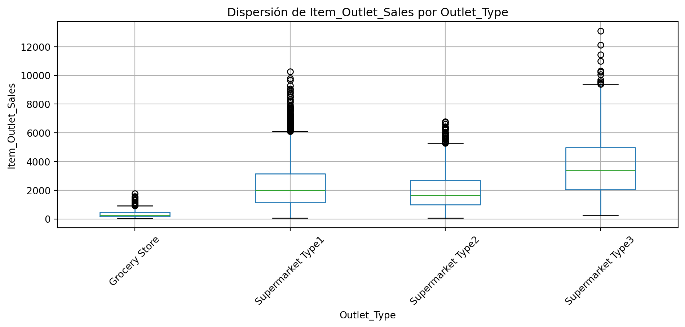

Una vez identificada la ubicación o región central de las principales variables del conjunto de datos, el siguiente paso natural es estudiar su variabilidad. Mientras las medidas de localización responden a la pregunta “¿dónde se ubican los valores típicos?”, las medidas de dispersión responden a “¿qué tan separados o concentrados están los datos alrededor de ese centro?”. Esta distinción es crucial porque dos distribuciones pueden tener la misma media o la misma mediana y, sin embargo, exhibir comportamientos muy distintos en términos de estabilidad, riesgo o heterogeneidad interna.
En el contexto de Big Mart Sales, la variabilidad tiene una lectura operativa inmediata. Una variable con baja dispersión sugiere un comportamiento relativamente estable entre productos u outlets, mientras que una alta dispersión puede indicar mezcla de segmentos, presencia de valores extremos o una dinámica comercial desigual. Para variables como Item_Outlet_Sales, esto es especialmente relevante porque no basta con conocer el nivel promedio de ventas: también interesa saber si las ventas se mantienen relativamente homogéneas o si existen diferencias muy amplias entre observaciones.
Preparación del entorno
Trabajaremos con el siguiente dataset BigMart, para esta sección usaremos Python y las bibliotecas pandas, numpy, plotly y matplotlib.
Ver código
import pandas as pdimport numpy as npimport matplotlib.pyplot as pltplt.rcParams["figure.figsize"] = (8, 4.5)plt.rcParams["axes.grid"] =TrueDATA_PATH ="../../data/bigmart_sales.csv"df = pd.read_csv(DATA_PATH)vars_variabilidad = ["Item_Weight","Item_Visibility","Item_MRP","Item_Outlet_Sales",]
De la localización a la dispersión
Si en el capítulo anterior se observó que la media y la mediana resumen el centro, ahora interesa medir qué tanto se alejan los datos de esos valores representativos. Las medidas más comunes son:
Desviación estándar muestral: \[
s = \sqrt{s^2}
\]
Recorrido intercuartílico: \[
IQR = Q_3 - Q_1
\]
Coeficiente de variación: \[
CV = \frac{s}{\bar{x}}
\] siempre que la media sea positiva y tenga interpretación de escala.
Estas medidas no son intercambiables. El rango depende exclusivamente de los valores extremos, la desviación estándar resume el alejamiento promedio respecto a la media y el IQR se concentra en el 50% central de la distribución, por lo que resulta más robusto ante observaciones atípicas.
La interpretación de estas medidas debe hacerse con cuidado. Tanto la varianza como la desviación estándar dependen de la escala en la que se mide cada variable. Por esta razón, no es conveniente comparar de forma directa la desviación estándar de Item_MRP con la de Item_Visibility, ya que ambas variables están expresadas en magnitudes muy distintas. Para una comparación más justa, resulta más útil el coeficiente de variación (cv), porque relaciona la dispersión con el tamaño del promedio.
A partir del coeficiente de variación, se observa que Item_Outlet_Sales (cv = 0.782) y Item_Visibility (cv = 0.780) son las variables con mayor dispersión relativa. Esto significa que, en ambos casos, los valores se encuentran bastante separados de su media y, por tanto, presentan una alta heterogeneidad. En términos prácticos, las ventas y la visibilidad no se comportan de manera uniforme en el dataset, sino que muestran diferencias importantes entre observaciones.
Por otro lado, Item_MRP presenta un coeficiente de variación intermedio (cv = 0.442). Aunque sus valores se distribuyen en un rango amplio, su variabilidad relativa es menor que la observada en ventas y visibilidad. Finalmente, Item_Weight es la variable menos dispersa en términos relativos (cv = 0.361), lo que sugiere que sus valores están más concentrados alrededor de la media.
Esta lectura puede reforzarse con el rango intercuartílico (iqr), que muestra la amplitud del 50 % central de los datos. En Item_Outlet_Sales, el valor de iqr = 2267.049 indica que incluso la parte central de la distribución presenta una dispersión considerable. En Item_MRP, el iqr = 91.817 también sugiere variabilidad, aunque menos extrema. En Item_Weight e Item_Visibility, estos valores deben interpretarse dentro de su propia escala, evitando comparaciones absolutas entre variables distintas.
En conjunto, estas medidas muestran que Item_Outlet_Sales y Item_Visibility son las variables más variables del conjunto, mientras que Item_Weight presenta un comportamiento relativamente más estable. Para el EDA, esto es importante porque indica que algunas variables requieren una exploración más cuidadosa de su dispersión, posibles valores extremos y diferencias entre grupos.
Visualización de dispersión con boxplots
Los diagramas de caja son especialmente útiles porque combinan localización y variabilidad en una sola figura. La caja representa el intervalo entre \(Q_1\) y \(Q_3\), la línea interna señala la mediana y los bigotes muestran la extensión típica de los datos fuera del rango intercuartílico.
Esta visualización permite notar rápidamente qué variables presentan mayor amplitud central, qué tan alejados aparecen los extremos y si existen observaciones fuera del patrón principal. En contextos de EDA, el boxplot es una transición natural entre el estudio de localización y el análisis de forma, porque revela tanto la posición de la mediana como la anchura del bloque central.
Rango frente a IQR: medidas sensibles y robustas
El rango es intuitivo, pero muy sensible a valores extremos. Si una sola observación toma un valor muy grande o muy pequeño, el rango cambia de forma drástica. El IQR, en cambio, describe la anchura del bloque central de observaciones y por ello suele ser una mejor medida cuando se desea resumir dispersión sin que la descripción dependa demasiado de extremos aislados.
Para visualizar esta idea, puede compararse el rango con el IQR en una tabla compacta.
Desde un punto de vista pedagógico, esta tabla ayuda a distinguir entre dos nociones de amplitud: la amplitud total observada y la amplitud de la región donde efectivamente se concentra la mitad de los datos.
Comparación de dispersión entre grupos
La variabilidad también puede cambiar entre subpoblaciones. En Big Mart Sales una comparación razonable consiste en estudiar la dispersión de Item_Outlet_Sales según Outlet_Type.
df.boxplot(column="Item_Outlet_Sales", by="Outlet_Type", rot=45, figsize=(10, 5))plt.title("Dispersión de Item_Outlet_Sales por Outlet_Type")plt.suptitle("")plt.xlabel("Outlet_Type")plt.ylabel("Item_Outlet_Sales")plt.tight_layout()plt.show()

Esta figura permite observar que no solo cambia el centro de las ventas según tipo de outlet, sino también su grado de dispersión. Algunos grupos pueden presentar ventas más consistentes, mientras otros muestran una distribución más extendida. Esta observación será clave cuando más adelante se discuta heterogeneidad.
Coeficiente de variación y comparación relativa
En muchas aplicaciones interesa comparar dispersión entre variables con escalas diferentes. La desviación estándar por sí sola no siempre permite hacerlo de manera justa. El coeficiente de variación proporciona una medida adimensional que expresa la dispersión como proporción del promedio.
Si una variable exhibe un coeficiente de variación alto, ello sugiere que su dispersión es grande en relación con su propio nivel medio. En el caso de ventas o visibilidad, este tipo de medida puede ser más informativa que la desviación estándar absoluta cuando se comparan fenómenos de distinta escala.
Histograma con bandas de dispersión
Otra visualización útil consiste en representar la media junto con bandas de una desviación estándar. No debe interpretarse como intervalo de confianza ni como regla universal de cobertura, pero sí como una guía visual de la amplitud típica alrededor del promedio.
Esta visualización resulta especialmente útil para introducir una idea intuitiva: distribuciones con la misma media pueden diferir porque sus observaciones se encuentran más o menos alejadas de ese centro.
Propuesta de dashboard de variabilidad
La segunda versión del dashboard del libro puede integrar los siguientes elementos:
Tabla resumen de dispersión con rango, desviación estándar, IQR y coeficiente de variación.
Boxplots para las principales variables numéricas.
Comparación de dispersión por grupo, por ejemplo ventas por Outlet_Type.
Histograma con bandas de una desviación estándar para reforzar la lectura visual del alejamiento respecto al centro.
En términos narrativos, este dashboard complementa al primero: ya no solo se muestra dónde está el centro, sino también qué tan compacta o extendida es la distribución alrededor de él.
Conclusiones
Las medidas de variabilidad son indispensables para cualquier análisis exploratorio serio. En Big Mart Sales permiten distinguir entre variables estables y variables altamente dispersas, evaluar la amplitud del bloque central de datos y comparar qué grupos presentan mayor o menor consistencia. Esta etapa también deja ver que algunas medidas son más sensibles a extremos que otras, lo cual anticipa la necesidad de estudiar con mayor detalle la forma de las distribuciones en el siguiente capítulo, en particular la asimetría, la curtosis y la posible presencia de valores atípicos.
Ejercicio sugerido
Construya un segundo dashboard en Quarto que incluya:
una tabla resumen con rango, desviación estándar, IQR y coeficiente de variación;
boxplots para Item_Weight, Item_Visibility, Item_MRP e Item_Outlet_Sales;
una comparación de la dispersión de Item_Outlet_Sales por Outlet_Type;
un comentario breve donde se explique por qué el IQR es más robusto que el rango frente a valores extremos.